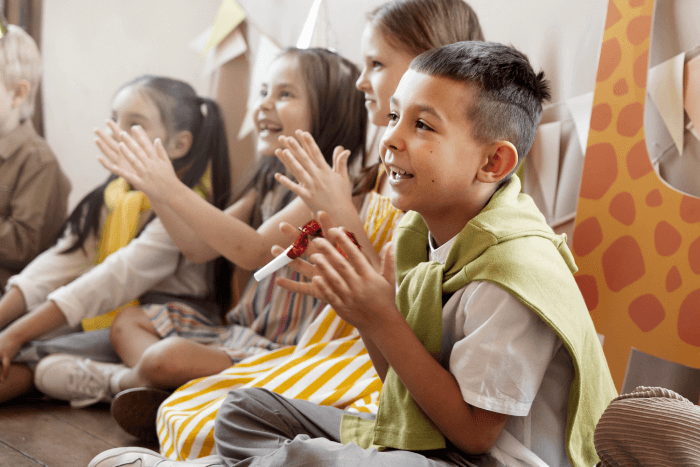

Transforme vidas com um sorriso
Na Sorrisos do Amanhã promovemos educação, alimentação e atividades culturais para crianças em situação de vulnerabilidade.

Voluntariado
Participe das nossas ações educativas, culturais e de apoio alimentar.
Doações
Suas contribuições mantêm nossas atividades e ampliam nosso alcance.
Transparência
Prestamos contas e divulgamos relatórios de impacto e uso de recursos.